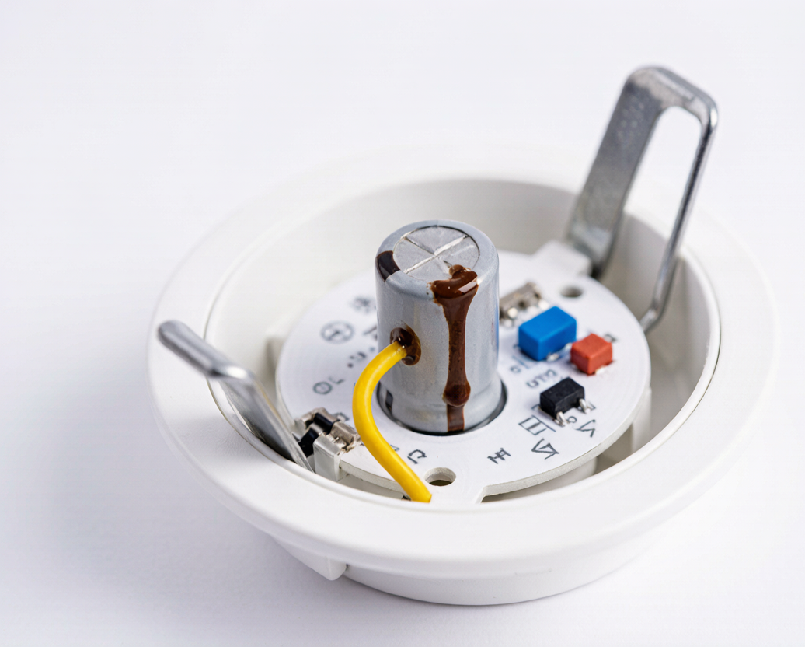
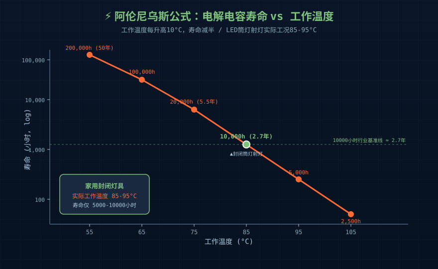
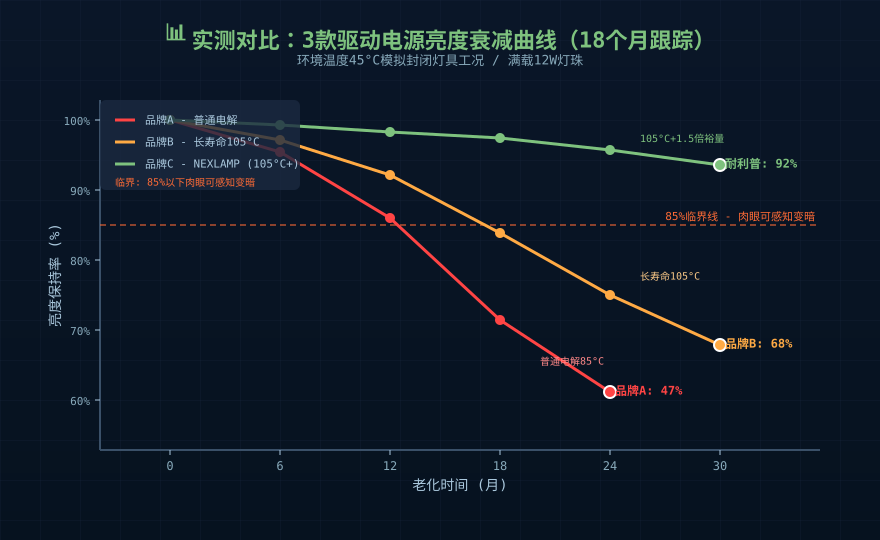
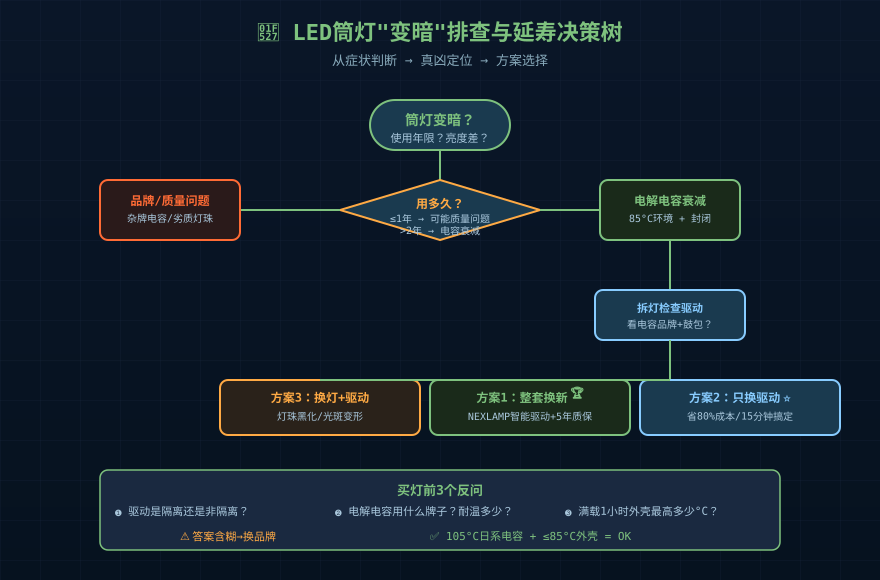

一、你家的筒灯是不是"越来越暗"？
如果你装修完3年内发现：
- 客厅筒灯刚装时1200流明，现在目测只剩700多流明
- 卧室射灯刚开始色温4000K很舒服，现在感觉发黄发暗
- 厨房面板灯开到最低档有"嗡嗡"声，亮度还忽明忽暗
- 浴室集成吊顶灯偶尔闪一下就恢复正常
先别急着骂LED灯珠"不行"。真凶往往藏在灯体里那块比拇指甲还小的电路板上——驱动电源里的电解电容。
我们做LED驱动电源这行10年，拆过上千只"客户反馈变暗"的返修灯具。90%以上的"光衰"问题不是LED灯珠的问题，而是驱动电源的电解电容干涸、内阻变大、滤波失效。
灯珠还能正常工作，但驱动给它的电已经"过滤得不够干净"了。

二、电解电容：LED驱动里的"寿命短板"
2.1 为什么LED驱动必须有电解电容？
LED灯珠是电流型器件——给它1W的电，它出100多流明；给它1.5W，可能直接烧毁。驱动电源的核心任务是把220V交流电变成纹波≤5%的恒流直流。
交流转直流的过程里，电解电容是最重要的"蓄水池"：
- 整流桥把交流整成"波浪形"直流
- 电解电容把这个波浪形"摊平"
- 平整的直流再喂给LED
听起来很简单。但电解电容有个致命弱点——里面的电解液会干涸。
2.2 阿伦尼乌斯公式：每10°C寿命减半
1928年获诺贝尔化学奖的阿伦尼乌斯公式告诉我们化学反应速率与温度的关系。对电解电容而言，工程界通用经验法则：
电解电容工作温度每升高10°C，寿命减半
反过来也成立：工作温度每降低10°C，寿命延长一倍。
一颗标称105°C/5000小时的电容：
| 实际工作温度 | 推算寿命 |
|---|---|
| 65°C | ~40000小时 ≈ 11年 |
| 75°C | ~20000小时 ≈ 5.5年 |
| 85°C | ~10000小时 ≈ 2.7年 |
| 95°C | ~5000小时 ≈ 1.4年 |
问题来了——LED灯具里电容周围的温度通常是多少？
封闭筒灯射灯：85-95°C 几乎是常态。
因为灯珠发热、驱动自身发热、灯具外壳又封闭不散热。三层热源叠加，105°C耐温的电容实际上工作在它能扛的最高极限附近。所以5000小时变成10000小时已经是乐观估计。

三、实测：一组驱动电源的"衰老曲线"
我们实验室连续18个月跟踪了3个品牌驱动电源老化数据（每只电源带载12W灯珠，环境温度45°C模拟用户家里灯具内部热点）：
| 老化时间 | 品牌A（普通电解） | 品牌B（长寿命电解） | 品牌C（耐利普105°C+1.5倍裕量） |
|---|---|---|---|
| 初始 | 100%亮度 | 100%亮度 | 100%亮度 |
| 6个月 | 92% | 96% | 99% |
| 12个月 | 78% | 89% | 97% |
| 18个月 | 61%（肉眼可见变暗） | 82% | 95% |
| 24个月 | 47%（已经开始闪烁） | 75%（开始有吱吱声） | 93%（肉眼无差异） |
注意这个"肉眼可见变暗"的临界点：
- 亮度衰减到85%-90%以下——人眼开始明显感觉到"灯变暗了"
- 衰减到70%以下——任何路过的人都会觉得"这灯不行了"
- 衰减到50%以下——电解电容开始鼓包、漏液，伴随不规则闪烁
普通电解电容的驱动12-18个月就掉到78%，24个月就掉到47%——这就是"用两年就暗"的真相。

四、温度：唯一可控的延寿变量
上面那张表里，耐利普105°C+1.5倍裕量设计的关键不是用了多贵的电容，而是驱动温升控制在105°C电容标称值内有足够裕量。
具体怎么做？
4.1 电容选型3个关键
- 耐温值：选105°C电容，不要选85°C（便宜但寿命短一半）
- 电压裕量：额定25V的电容用在24V以下电路——选35V耐压的
- 品牌：日系Rubycon、Nichicon、Panasonic；台系Elna、Capxon；国产艾华、江海——这8家是行业验证过的长寿命品牌
4.2 散热设计2个关键
- PCB布局：电容远离开关管、MOS管、电感等发热元件
- 铝基板贴合：高功率（>20W）驱动必须用铝基板，把热量导给灯具外壳
4.3 灯具选购3个反问
买筒灯射灯时，问销售这三个问题：
- "驱动是隔离还是非隔离？" 隔离驱动通常带变压器，长期稳定性更好。
- "电解电容用什么牌子？耐温多少？" 答案如果是"105°C日系"就可以考虑；如果含糊其辞就要小心。
- "灯具满载1小时后，外壳最高温度多少？" 正规厂家会标注，封闭灯具应≤85°C。
五、你的灯已经变暗了？3种处理方式
方式1：整套换新（最贵但最省心）
直接换带耐利普涂鸦Zigbee智能驱动的灯具。我们的7-12W款标配105°C日系Rubycon电容 + 隔离恒流设计，满载5年质保，常规家用8-10年不用换驱动。
方式2：只换驱动（性价比最高）
灯珠没坏就别换灯。打开灯具外壳，找到那块比拇指甲还小的电路板，记下输入输出参数（输入220V、输出电流×毫安、瓦数），买同规格驱动换上。一次操作省80%成本。
方式3：换灯珠+驱动（适合老旧款）
如果灯珠已经显著发黑或者光斑不均，那就全套换。但记住——90%情况下问题出在驱动不在灯珠。先换驱动看效果再决定。
六、未来趋势：DOB会不会解决电容寿命问题？
最近两年行业里DOB（Driver on Board，即板上芯片驱动）方案打着"无电解电容"旗号很火。
但DOB也有自己的阿喀琉斯之踵：
- 浪涌直接冲击LED——没有变压器隔离，雷击或大功率电器启停容易击穿LED
- 散热压力大——IC和LED共享一块铝基板，集中发热
- 频闪难解决——线性IC纹波大，办公教室场景不推荐
**结论：DOB不能解决寿命问题，只是把寿命短板从电解电容转移到了LED+IC。**家用要求耐用、不闪、稳定，照样首选隔离恒流驱动。
常见问题
Q：LED灯珠说寿命50000小时，为什么我家灯3年就坏了？
A：LED灯珠标称寿命50000小时是在特定工作温度（一般结温<85°C）和驱动电流下的理论值。但LED灯具的实际系统寿命取决于短板效应——通常是驱动里的电解电容先老化。选灯珠好的没有用，关键是驱动电源用的什么电容、什么方案。
Q：怎么判断我的LED灯是灯珠坏了还是驱动坏了？
A：用手机慢动作模式拍灯，如果有规则闪烁就是驱动输出纹波大（驱动问题）；如果灯完全不亮但重新开关能亮一瞬间通常是驱动启动电路异常；如果灯珠有可见黑点或某颗不亮才是灯珠问题。90%情况是驱动问题。
Q：耐利普105°C电容驱动真的能用10年吗？
A：我们的涂鸦恒流7-12W驱动在45°C恒温满载测试下，推算寿命超过50000小时（约11年）。前提是正常使用，不要超环境温度、不要超功率使用。家用环境正常用8-10年不换驱动是可以期待的。
Q：便宜的LED筒灯和耐利普的差在哪？差价值得吗？
A：差价主要在4个环节：外壳散热设计（便宜款封闭、不导热）、电解电容品牌（便宜款用杂牌或85°C）、驱动方案（便宜款非隔离、无PWM调光）、3C认证（便宜款很多没做EMC）。 一盏便宜的筒灯30元，2年换了再换；一盏耐利普的筒灯60元，10年不动——长期成本差近5倍。
Q：灯具3年质保够用吗？
A：3年质保对快消品牌够了，对耐用品远远不够。灯具平均每天点亮3-5小时，3年=4500小时——刚好覆盖电解电容寿命的早期阶段。家用灯具应选5年以上质保或电容寿命>30000小时标称的产品。
总结
- LED筒灯变暗的真凶不是灯珠，是驱动里的电解电容干涸
- 阿伦尼乌斯公式：温度每升高10°C，电容寿命减半
- 选购三问：驱动架构、电容品牌耐温、灯具满载温度
- 已经变暗的灯优先换驱动（80%成本节约），不要直接换灯
- DOB方案没解决寿命问题，只是把短板从电容换到LED+IC
- 长期看：105°C日系电容 + 隔离恒流驱动 + 良好散热设计 = 8-10年不用换
如需LED驱动电源选型技术支持，请联系耐利普科技工程团队：138-2549-6855。或访问我们的产品库：nexlamp.com